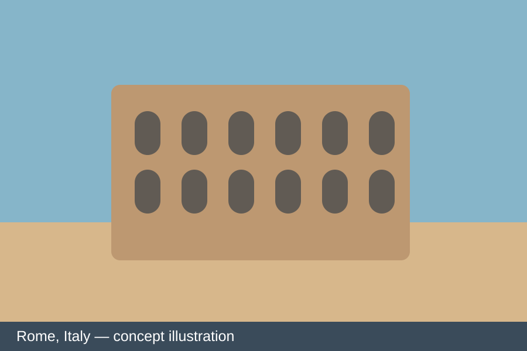
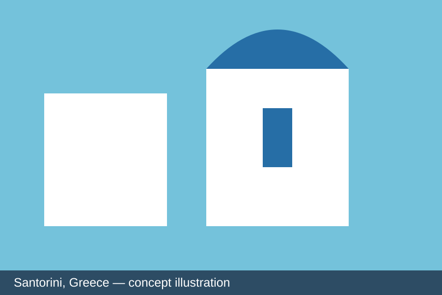
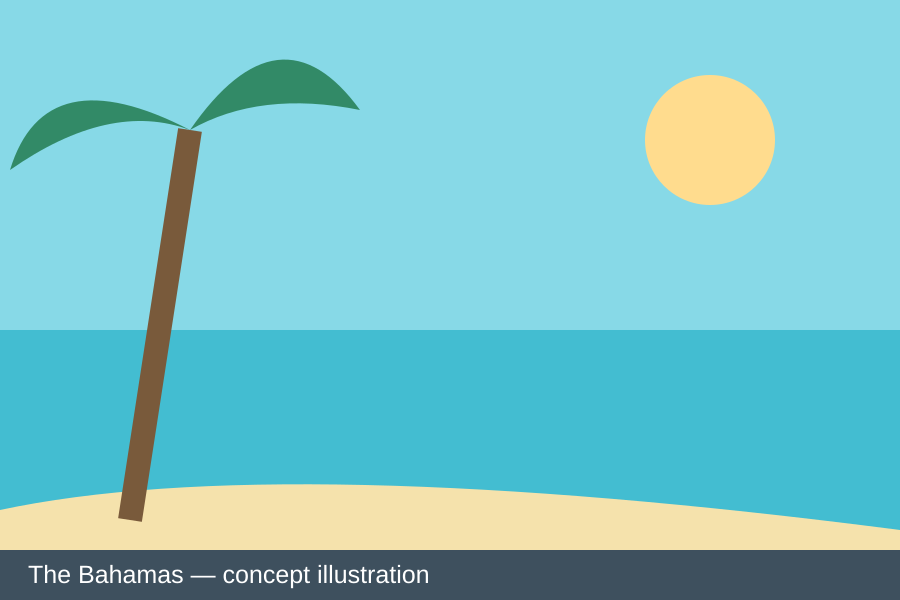

Rome, Italy
Stephanie loves Rome for its food and historic architecture. It is a destination where history and everyday life meet.
Explore Rome tourism ↗
Stephanie loves Rome for its food and historic architecture. It is a destination where history and everyday life meet.
Explore Rome tourism ↗
The dramatic views and distinctive architecture make Santorini one of Stephanie's favorite places.

Stephanie especially loves the beautiful water, a reminder of why she hopes to live near the coast.
Travel images are original concept illustrations for this course project, not photographs from Stephanie's trips.